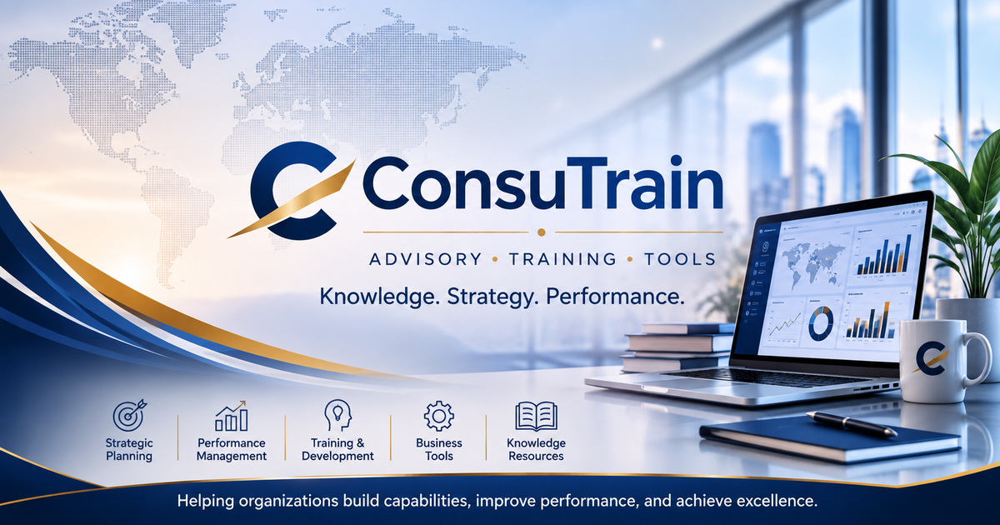

Prospective et planification par scénarios : comprendre les futurs possibles avant de décider
Comprendre la prospective et la planification par scénarios, leur lien avec la stratégie et leur utilité pour décider dans un environnement incertain.

La prospective part d’une idée simple : nous ne pouvons pas maîtriser entièrement l’avenir, mais nous pouvons mieux en comprendre les signaux et mieux nous y préparer. Son objectif n’est donc pas de prédire exactement ce qui se produira, mais de renforcer notre capacité à lire les changements et à envisager différentes possibilités.
Cette démarche est directement liée à la planification stratégique. Un plan stratégique ne repose pas seulement sur la description de la situation présente : il doit aussi tenir compte des évolutions possibles de l’environnement, des opportunités et des menaces susceptibles d’apparaître, ainsi que des options auxquelles l’organisation doit se préparer.
Dans l’analyse habituelle de leur environnement, les organisations utilisent notamment PESTEL pour étudier le contexte global, les cinq forces de Porter pour comprendre la concurrence et VRIO pour examiner leurs capacités internes. Ces outils sont importants, mais ils décrivent souvent la situation présente ou proche. La prospective cherche à élargir le regard vers l’avenir.
La prospective ne commence pas par une imagination sans cadre. Elle s’appuie sur une observation organisée des changements, des tendances, des signaux faibles et des forces motrices susceptibles d’influencer l’activité, la société, les technologies, la réglementation ou le marché.
La planification par scénarios transforme cette observation en représentations de futurs possibles. Un scénario n’est pas une prévision unique : c’est un récit cohérent qui décrit comment l’avenir pourrait évoluer si certains facteurs et certaines variables se combinaient d’une manière donnée.
La différence essentielle est la suivante : la prévision cherche à répondre à « Que va-t-il probablement se passer ? », tandis que le scénario demande « Que pourrait-il se passer, et que ferions-nous dans ce cas ? ». Cette démarche est particulièrement utile dans un environnement marqué par l’incertitude.
Dans une organisation, la planification par scénarios évite de dépendre d’un seul plan fondé sur une seule hypothèse. Si les conditions changent, ce plan peut devenir fragile. En envisageant plusieurs scénarios, l’organisation se prépare davantage à ajuster ses décisions rapidement et avec discernement.
La prospective pose, par exemple, les questions suivantes : comment les besoins des clients pourraient-ils évoluer ? Quelles technologies pourraient transformer le service ? Quelles réglementations ou tendances économiques pourraient modifier le marché ? Quelles évolutions sociales pourraient créer de nouvelles opportunités ou difficultés ?
Cette réflexion devient plus importante dans un monde qui change rapidement. Les organisations n’évoluent plus dans un environnement totalement stable : elles font face à des transformations technologiques, réglementaires, économiques et sociales successives. Elles ont besoin d’outils pour comprendre la situation avant que les changements ne se transforment en crises.
La prospective élargit ainsi le champ de vision, tandis que la planification par scénarios structure la réflexion sur les alternatives. La première repère les signaux et les tendances ; la seconde les transforme en possibilités que l’on peut discuter et auxquelles on peut se préparer.
Pour construire des scénarios, accumuler des informations ne suffit pas. Il faut définir la question stratégique à explorer. Par exemple : comment le marché de la formation et du conseil pourrait-il évoluer dans les cinq prochaines années ? Ou comment les outils d’intelligence artificielle pourraient-ils modifier les activités administratives ?
Une fois la question définie, il faut rechercher les facteurs qui peuvent l’influencer. Certains sont clairs et directs ; d’autres restent incertains, mais pourraient avoir un impact important. Il devient alors essentiel de distinguer les tendances relativement établies des incertitudes susceptibles de conduire à plusieurs futurs possibles.
Un bon scénario ne se limite pas à une description générale. Il doit être logique, cohérent et utile à la décision. Sa lecture doit aider l’équipe à se demander : quels sont les risques ? Quelles sont les opportunités ? Quelle décision devons-nous réexaminer ? Quelles capacités devons-nous développer ?
Les scénarios ne remplacent pas le plan stratégique : ils le soutiennent. Le plan indique une direction ; les scénarios permettent d’en tester la solidité face à différentes possibilités.
Une erreur fréquente consiste à traiter la planification par scénarios comme un exercice créatif séparé de la décision. Elle peut alors produire de beaux récits sans effet sur les politiques, les initiatives ou l’allocation des ressources. Les scénarios doivent donc toujours être reliés aux décisions et à l’action.
Une autre erreur consiste à confondre scénario et souhait. Un scénario ne décrit pas seulement ce que nous espérons : il peut envisager un avenir difficile ou inconfortable. Son intérêt est de permettre à l’organisation de discuter de ces possibilités avant d’y être confrontée.
La prospective et la planification par scénarios renforcent ainsi la capacité de l’organisation à réfléchir avant de décider. Au-delà de « Que devons-nous faire maintenant ? », elles invitent à poser des questions plus larges : qu’est-ce qui pourrait changer, quelles alternatives avons-nous et comment mieux nous préparer ?